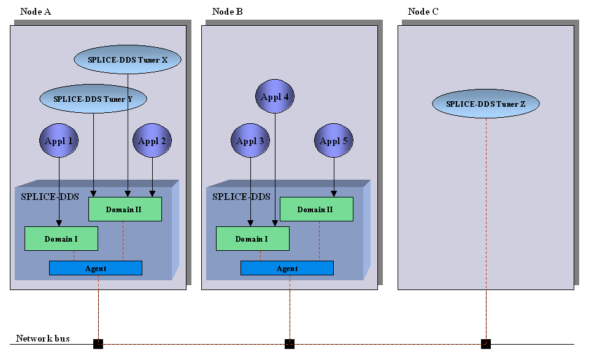

2. Introduction¶
This section describes the Vortex OpenSplice Tuner.
2.1. General Description¶
Vortex OpenSplice Tuner has been implemented in the Java language. It is possible to use it on every platform where a Java Virtual Machine (JVM) implementation is available. That means that Vortex OpenSplice Tuner does not require OpenSplice to be available on the local system (see Vortex OpenSplice Tuner Z at Node C).
The diagram below shows a high-level view of a typical environment with both Vortex OpenSplice and Vortex OpenSplice Tuner.
Vortex OpenSplice is available at Node A and Node B. Vortex OpenSplice Tuner is available at Node A and Node C. At both Node A and Node B there are some Vortex OpenSplice applications running (Applications 1 - 5).
Typical OpenSplice Tuner Environment
{kind=link}
Vortex OpenSplice Tuner is able to connect to one specific OpenSplice DDS domain at one specific node, both locally and remotely. A local connection is achieved by directly accessing OpenSplice at the local node. The diagram shows two local connections. Both OpenSplice Tuner X and Y are connected to Domain II. This implies it is possible to simultaneous connect two Vortex OpenSplice Tuners to one specific domain and node.
A remote connection can be achieved by means of an agent within Vortex OpenSplice. This agent allows Vortex OpenSplice Tuner to communicate with a remote node. In the diagram, the red dashed line indicates the possible remote connections of SPLICE-Tuner Z at Node C to the Vortex OpenSplice domains at the other two nodes.
Possible connections of Vortex OpenSplice Tuners to a domain and node shown are:
OpenSplice Tuner X —> Domain I at Node A
OpenSplice Tuner X —> Domain II at Node A
OpenSplice Tuner X —> Domain I at Node B
OpenSplice Tuner X —> Domain II at Node B
OpenSplice Tuner Y —> Domain I at Node A
OpenSplice Tuner Y —> Domain II at Node A
OpenSplice Tuner Y —> Domain I at Node B
OpenSplice Tuner Y —> Domain II at Node B
OpenSplice Tuner Z —> Domain I at Node A
OpenSplice Tuner Z —> Domain II at Node A
OpenSplice Tuner Z —> Domain I at Node B
OpenSplice Tuner Z —> Domain II at Node B